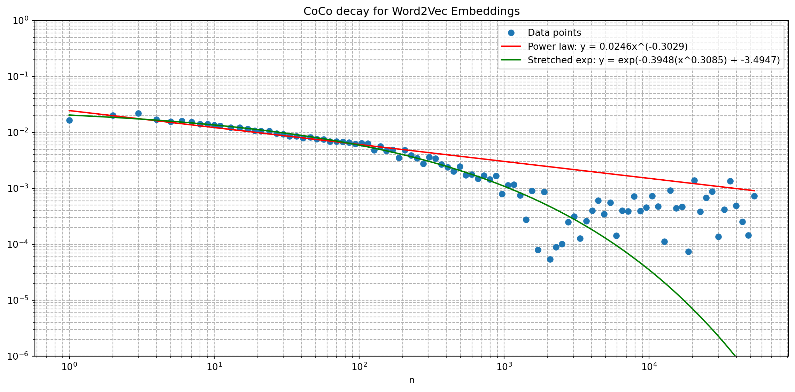
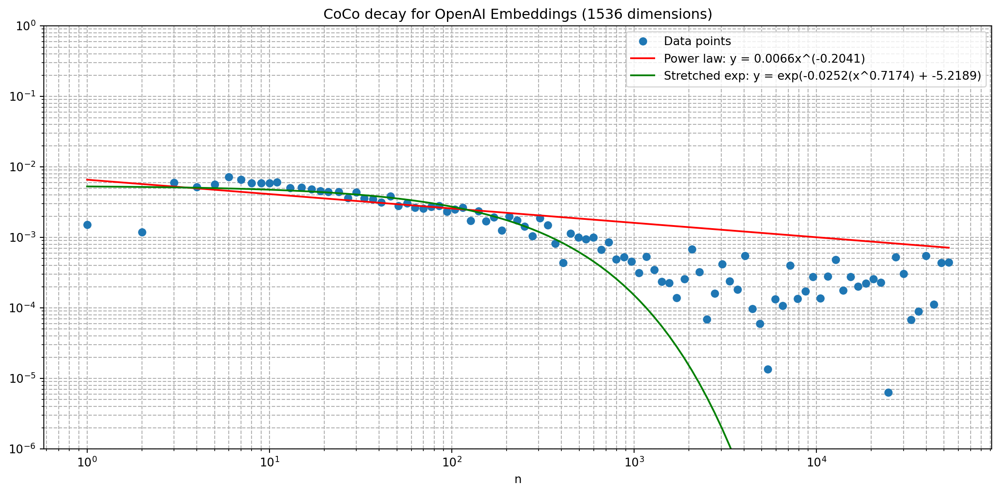

import numpy as np
# Set random seed for reproducibility
np.random.seed(213)
# Define parameters
N: int = 800 # Number of tokens
d: int = 100 # Embedding dimension
# Generate synthetic embedding matrix
X: np.ndarray = np.random.randn(N, d)Long-range dependence in word time series
python
large language models
openai
NLP
mutual information
correlation
In our recent paper Long-Range Dependence in Word Time Series: The Cosine Correlation of Embeddings, we demonstrated that natural language exhibits long-range dependence (LRD) - a property where correlations between words persist over much larger distances than what simple Markov models would predict.
While our paper focused on traditional word2vec embeddings, the landscape of word representations is much richer. In this blog post, we’ll walk through the key concepts from our paper where we explored LRD using cosine correlations of word embeddings obtained via pre-trained word2vec models. Additonally, in this blog post, we’ll explore OpenAI embeddings.
Long-Range Dependence (LRD)
Most traditional language models operate under the Markov assumption - the idea that the probability of the next word depends only on a finite number of preceding words. This leads to short-range dependence (SRD), where correlations between words decay exponentially with distance:
\[I(W_i; W_{i+n}) = O(\exp(-\delta n)), \quad \delta > 0\]
where \(I(W_i; W_{i+n})\) is the Shannon’s mutual information between words separated by \(n\) positions. However, natural language exhibits richer structure. Long-range dependence (LRD) occurs when correlations decay more slowly - following either a power law:
\[I(W_i; W_{i+n}) \sim n^{-\gamma}, \quad \gamma > 0\]
or a stretched exponential:
\[I(W_i; W_{i+n}) \sim \exp(-\delta n^{\beta}), \quad \delta > 0, 0 < \beta < 1\]
Direct estimation of mutual information between words is challenging due to the sparse nature of language data. Instead, we introduced the cosine correlation as a easy-to-compute proxy. For two random vectors \(U\) and \(V\), the cosine correlation is defined as:
\[\text{CoCo}(U; V) = \mathbb{E}\left[\frac{U}{||U||} \cdot \frac{V}{||V||}\right] - \mathbb{E}\left[\frac{U}{||U||}\right] \cdot \mathbb{E}\left[\frac{V}{||V||}\right]\]
This formulation is analogous to the Pearson correlation but operates in the space of normalized vectors, making it particularly suitable for word embeddings where direction (rather than magnitude) carries semantic meaning.
Crucially, we proved (Theorem 3 of our paper) that the squared cosine correlation provides a lower bound for mutual information:
\[I(U; V) \geq \frac{\text{CoCo}(U; V)^2}{2}\]
This means that if we observe slow decay in cosine correlation, we can infer the presence of LRD in the underlying language process.
The Cosine Correlation (CoCo) Estimator
Demonstration with Synthetic Data
Let’s start with a simple example using synthetic data to understand the algorithm. We’ll generate a random matrix \(X\) of dimension \(N \times d\), where \(N=800\) represents the number of tokens and \(d=100\) is the dimensionality of the embedding space.
The naive implementation would require \(O(N^2 d)\) operations, but we can achieve \(O(Nd)\) complexity using prefix sums:
Step 1: Compute and cache normalized embeddings: \[\overline{X}_i = \frac{X_i}{||X_i||} \quad \text{for } i=1, 2, \dots, N\]
Step 2: Build prefix sums: \[S_{k} = \sum_{i=1}^{k} \overline{X}_{i} \quad \text{for } k = 0, 1, \dots, N\]
Step 3: For lag \(l\), calculate the expected values of normalized vectors: \[\mathbb{E} \left[ \overline{U} \right] = \frac{1}{N - l} \sum_{i=1}^{N-l} \overline{X}_i = \frac{S_{N-l} - S_0}{N - l}\]
\[\mathbb{E} \left[ \overline{V} \right] = \frac{1}{N - l} \sum_{i=l+1}^{N} \overline{X}_i = \frac{S_{N} - S_l}{N - l}\]
Step 4: Compute the expectation of the dot product: \[\mathbb{E} \left[ \overline{U} \cdot \overline{V} \right] = \frac{1}{N-l} \sum_{i=1}^{N-l} \overline{X_i} \cdot \overline{X}_{i+l}\]
The cosine correlation is then: \(\text{CC}(U; V) = \mathbb{E} \left[ \overline{U} \cdot \overline{V} \right] - \mathbb{E} \left[ \overline{U} \right] \cdot \mathbb{E} \left[ \overline{V} \right]\)
# Step 1: Normalize embeddings
norms: np.ndarray = np.linalg.norm(X, axis=1, keepdims=True) # Shape: (N, 1)
norms[norms == 0] = 1.0 # Avoid division by zero
X_normalized: np.ndarray = X / norms # Shape: (N, d)
# Step 2: Build prefix sums
S: np.ndarray = np.zeros((N + 1, d))
S[1:] = np.cumsum(X_normalized, axis=0) # Shape: (N+1, d)
# Example calculation for lag l=5
l: int = 5
length: int = N - l
# Step 3: Calculate expected values
E_U: np.ndarray = (S[N - l] - S[0]) / length # Shape: (d,)
E_V: np.ndarray = (S[N] - S[l]) / length # Shape: (d,)
EU_EV: float = np.dot(E_U, E_V) # Scalar
# Step 4: Calculate expectation of dot products
U: np.ndarray = X_normalized[:N - l] # Shape: (N-l, d)
V: np.ndarray = X_normalized[l:] # Shape: (N-l, d)
dot_products: np.ndarray = np.sum(U * V, axis=1) # Shape: (N-l,)
E_UV: float = np.mean(dot_products) # Scalar
print(f"Lag: {l}, E[U·V]: {E_UV:.6f}, E[U]·E[V]: {EU_EV:.6f}")
coco_value: float = E_UV - EU_EV
print(f"Cosine Correlation at lag {l}: {coco_value:.6f}")Lag: 5, E[U·V]: -0.000650, E[U]·E[V]: 0.001172
Cosine Correlation at lag 5: -0.001823The LRDEstimator Class
Now let’s encapsulate this algorithm into a class. This is a simplified version for demonstration. Our full implementation on GitHub includes support for pooled embeddings and additional optimization techniques used in our research.
class LRDEstimator:
def __init__(self, vectors: np.ndarray) -> None:
self.vectors = vectors
self.N, self.d = vectors.shape
# Cached normalized embeddings and prefix sums
self._X_normalized: np.ndarray = None
self._prefix_sums: np.ndarray = None
def compute_unpooled(self) -> None:
if self._X_normalized is None:
# Normalize embeddings
norms = np.linalg.norm(self.vectors, axis=1, keepdims=True)
norms[norms == 0] = 1.0 # Avoid division by zero
self._X_normalized = self.vectors / norms
# Build prefix sums
self._prefix_sums = np.zeros((self.N + 1, self.d))
self._prefix_sums[1:] = np.cumsum(self._X_normalized, axis=0)
def calculate_coco(self, lag: int) -> float:
if lag >= self.N or lag <= 0:
raise ValueError(f"lag={lag} must be in range (0, {self.N})")
self.compute_unpooled()
length = self.N - lag
U_sum = self._prefix_sums[self.N - lag] - self._prefix_sums[0]
V_sum = self._prefix_sums[self.N] - self._prefix_sums[lag]
E_U = U_sum / length
E_V = V_sum / length
U = self._X_normalized[:length]
V = self._X_normalized[lag:lag + length]
E_UV = np.mean(np.sum(U * V, axis=1))
return E_UV - np.dot(E_U, E_V)Application to human-written text
We’ll use a text from the Standardized Project Gutenberg Corpus (Gerlach & Font-Closs, 2020). It is Cecilia: A Story of Modern Rome which has more than 100k tokens.
from typing import List, Tuple
with open("data/SGPC/PG31723_tokens.txt", "r") as f:
tokens: List[str] = f.read().split("\n")
# Remove empty tokens
tokens = [token for token in tokens if token.strip()]
len(tokens)108546We’ll calculate the cosine correlation for lags from 1 to half the length of the text. To gain some efficiency, we’ll be increasing lag by 10% at each step. This will allow us to capture the long-range dependencies without computing every single lag.
def calculate_coco_series(vectors: np.ndarray) -> Tuple[np.ndarray, np.ndarray]:
lrd: LRDEstimator = LRDEstimator(vectors)
max_lag: int = int(vectors.shape[0] / 2)
current_lag: int = 1
lags: List[int] = []
coco: List[float] = []
while current_lag < max_lag:
coco_value = lrd.calculate_coco(lag=current_lag)
coco.append(coco_value)
lags.append(current_lag)
# Increase lag by ~10%
current_lag = int(np.ceil(current_lag * 1.1))
return np.array(lags), np.array(coco)Word2Vec embeddings
Word2vec, introduced by Mikolov et al. in 2013, learns word representations by predicting context words (Skip-gram) or target words from context (CBOW). These are static embeddings - each word has a fixed representation regardless of context. In our paper, we used 100-dimensional Word2Vec Continuous Skipgram embeddings trained on English CoNLL17 corpus (https://vectors.nlpl.eu/repository/).
from gensim.models import KeyedVectors
# Load pre-trained word2vec model
model_path = "embeddings/word2vec_en.bin"
model = KeyedVectors.load_word2vec_format(model_path, binary=True)
# Extract embeddings for tokens that exist in the model
vectors_w2v: np.ndarray = np.asarray([model[w] for w in tokens if w in model])
# Calculate CoCo series for word2vec embeddings
lags_w2v, coco_w2v = calculate_coco_series(vectors_w2v)OpenAI Embeddings
OpenAI (https://platform.openai.com/docs/guides/embeddings) provides 2 ebmeddings models: - text-embedding-3-small with 1536 dimensions - text-embedding-3-large with 3072 dimensions.
Instead of static embeddings for indiviual words, here we can embed longer texts, such as senteces, paragraphs, or even entire documents. The embeddings are context-aware, meaning the same word can have different representations depending on its usage.
According to OpenAI documentation, we can reduce number of dimensions without losing semantic properties. In this demonstration we’ll use full 1536-dimensional text-embedding-3-small, as well as reduced one with 100 dimensions for consistency with our Word2Vec embeddings.
For this demonstration with relatively small number of tokens, the cost is negligible (< $0.01 USD). However, for larger datasets with thousands of tokens, we could use OpenAI’s Batch API, which offers 50% cost savings and higher rate limits.
import openai
import json
import osdef get_embeddings(tokens: List[str], model: str, dimensions: int) -> List[List[float]]:
if model not in ["text-embedding-3-small", "text-embedding-3-large"]:
raise ValueError(f"Unsupported model: {model}. Supported models are 'text-embedding-3-small' and 'text-embedding-3-large'.")
response = openai.embeddings.create(input=tokens, model=model, dimensions=dimensions)
return [item.embedding for item in response.data]def load_embeddings_dictionary(tokens: List[str], model: str, dimensions: int) -> dict:
""" Load cached embeddings or create new ones using OpenAI API. """
# Create filename based on model and dimensions
embeddings_dictionary_path = f"embedding_dictionary_{model}_{dimensions}.json"
# Load or create embeddings dictionary
if os.path.exists(embeddings_dictionary_path):
print(f"Loading cached OpenAI embeddings from {embeddings_dictionary_path}...")
with open(embeddings_dictionary_path, "r") as f:
embeddings_dictionary = json.load(f)
else:
print(f"Fetching embeddings from OpenAI API using {model} with {dimensions} dimensions...")
vocabulary = list(set(tokens))
vocabulary = [token for token in vocabulary if token.strip()]
embeddings = []
batch_size = 2048
for i in range(0, len(vocabulary), batch_size):
batch = vocabulary[i:i + batch_size]
print(f"Processing batch {i//batch_size + 1}/{(len(vocabulary)-1)//batch_size + 1}")
batch_embeddings = get_embeddings(batch, model=model, dimensions=dimensions)
embeddings.extend(batch_embeddings)
embeddings_dictionary = dict(zip(vocabulary, embeddings))
# Cache the results
with open(embeddings_dictionary_path, 'w') as f:
json.dump(embeddings_dictionary, f, indent=2)
print(f"Cached {len(embeddings_dictionary)} embeddings to {embeddings_dictionary_path}")
print(f"Loaded embeddings for {len(embeddings_dictionary)} unique tokens")
return embeddings_dictionaryembeddings_dictionary_100 = load_embeddings_dictionary(
tokens=tokens,
model="text-embedding-3-small",
dimensions=100
)
# Or with different parameters:
embeddings_dictionary_1536 = load_embeddings_dictionary(
tokens=tokens,
model="text-embedding-3-small",
dimensions=1536
)Fetching embeddings from OpenAI API using text-embedding-3-small with 100 dimensions...
Processing batch 1/4
Processing batch 2/4
Processing batch 3/4
Processing batch 4/4
Cached 6696 embeddings to embedding_dictionary_text-embedding-3-small_100.json
Loaded embeddings for 6696 unique tokens
Fetching embeddings from OpenAI API using text-embedding-3-small with 1536 dimensions...
Processing batch 1/4
Processing batch 2/4
Processing batch 3/4
Processing batch 4/4
Cached 6696 embeddings to embedding_dictionary_text-embedding-3-small_1536.json
Loaded embeddings for 6696 unique tokens# Extract OpenAI embeddings for our tokens
vectors_openai_100: np.ndarray = np.asarray([embeddings_dictionary_100[w] for w in tokens if w in embeddings_dictionary_100])
vectors_openai_1536: np.ndarray = np.asarray([embeddings_dictionary_1536[w] for w in tokens if w in embeddings_dictionary_1536])
# Calculate CoCo series for OpenAI embeddings
lag_openai_100, coco_openai_100 = calculate_coco_series(vectors_openai_100)
lag_openai_1536, coco_openai_1536 = calculate_coco_series(vectors_openai_1536)Statistical analysis
Fit decay curves
To understand the nature of long-range dependencies in our data, we’ll fit two theoretical models to the absolute value of our cosine correlation curves: power law decay and stretched exponential decay. During the research we noticed that generally CoCo dissolves into a noise for lags larger than 1000. Therefore, we will fit the models only for lags up to 1000.
from scipy.optimize import curve_fitdef power_law(x: np.ndarray, a: float, b: float) -> np.ndarray:
return a * (x ** b)
def stretched_exponential(x: np.ndarray, a: float, b: float, c: float) -> np.ndarray:
return np.exp(-a * (x ** b) + c)def fit_curve(lags: np.ndarray, coco: np.ndarray, model: str) -> np.ndarray:
y_data = np.abs(coco)
try:
if model == "power_law":
popt, pcov = curve_fit(
f=power_law,
xdata=lags,
ydata=y_data,
bounds=([-np.inf, -np.inf], [np.inf, 0]),
maxfev=5000
)
y_pred = power_law(lags, *popt)
elif model == "stretched_exponential":
popt, pcov = curve_fit(
f=stretched_exponential,
xdata=lags,
ydata=y_data,
bounds=([0, 0, -np.inf], [np.inf, 1, np.inf]),
maxfev=5000
)
y_pred = stretched_exponential(lags, *popt)
else:
raise ValueError("Unsupported model type. Use 'power_law' or 'stretched_exponential'.")
return popt
except Exception as e:
print(f"Fitting failed for {model}: {e}")
return None# Fit models to both embedding types
min_lag, max_lag = 1, 1000
# Word2Vec fits
mask_w2v = (lags_w2v >= min_lag) & (lags_w2v <= max_lag)
pl_params_w2v = fit_curve(lags_w2v[mask_w2v], coco_w2v[mask_w2v], "power_law")
se_params_w2v = fit_curve(lags_w2v[mask_w2v], coco_w2v[mask_w2v], "stretched_exponential")
# OpenAI fits
mask_openai_100 = (lag_openai_100 >= min_lag) & (lag_openai_100 <= max_lag)
pl_params_openai_100 = fit_curve(lag_openai_100[mask_openai_100], coco_openai_100[mask_openai_100], "power_law")
se_params_openai_100 = fit_curve(lag_openai_100[mask_openai_100], coco_openai_100[mask_openai_100], "stretched_exponential")
mask_openai_1536 = (lag_openai_1536 >= min_lag) & (lag_openai_1536 <= max_lag)
pl_params_openai_1536 = fit_curve(lag_openai_1536[mask_openai_1536], coco_openai_1536[mask_openai_1536], "power_law")
se_params_openai_1536 = fit_curve(lag_openai_1536[mask_openai_1536], coco_openai_1536[mask_openai_1536], "stretched_exponential")Visualize results
import matplotlib.pyplot as plt
def make_plot(lags, coco, popt_pl, popt_se, title):
plt.figure(figsize=(12, 6))
# Data points
plt.loglog(lags, np.abs(coco), 'o', label='Data points')
# Power law fit
plt.loglog(lags, power_law(np.array(lags), *popt_pl), 'r-',
label=f'Power law: y = {popt_pl[0]:.4f}x^({popt_pl[1]:.4f})')
# Stretched exponential fit
plt.loglog(lags, stretched_exponential(np.array(lags), *popt_se), 'g-',
label=f'Stretched exp: y = exp(-{popt_se[0]:.4f}(x^{popt_se[1]:.4f}) + {popt_se[2]:.4f})')
plt.xlabel('n')
plt.ylabel('')
plt.title(title)
plt.grid(True, which="both", ls="--")
plt.legend()
plt.ylim(1e-6, 1e0)
plt.tight_layout()
plt.show()make_plot(
lags=lags_w2v,
coco=coco_w2v,
popt_pl=pl_params_w2v,
popt_se=se_params_w2v,
title="CoCo decay for Word2Vec Embeddings"
)
make_plot(
lags=lag_openai_100,
coco=coco_openai_100,
popt_pl=pl_params_openai_100,
popt_se=se_params_openai_100,
title="CoCo decay for OpenAI Embeddings (100 dimensions)"
)make_plot(
lags=lag_openai_1536,
coco=coco_openai_1536,
popt_pl=pl_params_openai_1536,
popt_se=se_params_openai_1536,
title="CoCo decay for OpenAI Embeddings (1536 dimensions)"
)
Fit quality
Post-hoc assessment of the fit quality was measured using the sum of squared logarithmic residuals (SSLR), which is just transformed version of the sum of squared residuals.
def calculate_sslr(y_obs: np.array, y_pred: np.array, num_params: int = 0) -> float:
# Filter out non-positive values that would cause log errors
mask = (y_obs > 0) & (y_pred > 0)
y_obs_filtered = y_obs[mask]
y_pred_filtered = y_pred[mask]
N = len(y_obs_filtered)
if N <= num_params:
return float('inf') # Avoid division by zero
# Sum of squared logarithmic residuals
log_residuals = np.sum((np.log(y_obs_filtered) - np.log(y_pred_filtered))**2)
# Divide by degrees of freedom (N - number of parameters)
return log_residuals / (N - num_params)sslr_w2v_pl = calculate_sslr(
y_obs=coco_w2v,
y_pred=power_law(np.array(lags_w2v), *pl_params_w2v),
num_params=2
)
sslr_openai_pl_100 = calculate_sslr(
y_obs=coco_openai_100,
y_pred=power_law(np.array(lag_openai_100), *pl_params_openai_100),
num_params=2
)
sslr_openai_pl_1536 = calculate_sslr(
y_obs=coco_openai_1536,
y_pred=power_law(np.array(lag_openai_1536), *pl_params_openai_1536),
num_params=2
)
sslr_w2v_se = calculate_sslr(
y_obs=coco_w2v,
y_pred=stretched_exponential(np.array(lags_w2v), *se_params_w2v),
num_params=3
)
sslr_openai_se_100 = calculate_sslr(
y_obs=coco_openai_100,
y_pred=stretched_exponential(np.array(lag_openai_100), *se_params_openai_100),
num_params=3
)
sslr_openai_se_1536 = calculate_sslr(
y_obs=coco_openai_1536,
y_pred=stretched_exponential(np.array(lag_openai_1536), *se_params_openai_1536),
num_params=3
)# Summary table
import pandas as pd
summary_data = {
"Model": ["Word2Vec", "OpenAI (100 dim)", "OpenAI (1536 dim)"],
"Power Law SSLR": [sslr_w2v_pl, sslr_openai_pl_100, sslr_openai_pl_1536],
"Stretched Exponential SSLR": [sslr_w2v_se, sslr_openai_se_100, sslr_openai_se_1536]
}
summary_df = pd.DataFrame(summary_data)
print(summary_df) Model Power Law SSLR Stretched Exponential SSLR
0 Word2Vec 1.447539 3.490593
1 OpenAI (100 dim) 1.426808 167.581219
2 OpenAI (1536 dim) 1.278742 101.538129Summary
As we can see above, the stretched exponential decay fits the data better than the power law decay. This is consistent with our findings in the paper, where we observed that natural language exhibits long-range dependencies that decay more slowly than exponential but faster than power law.
However, for the OpenAI embeddings, we received a very poor fit, measured by the SSLR, compared to the Word2Vec embeddings.